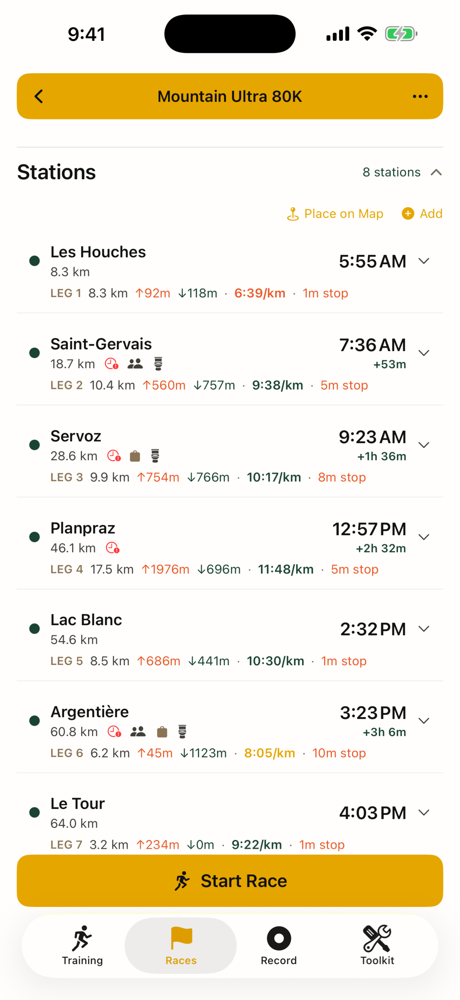
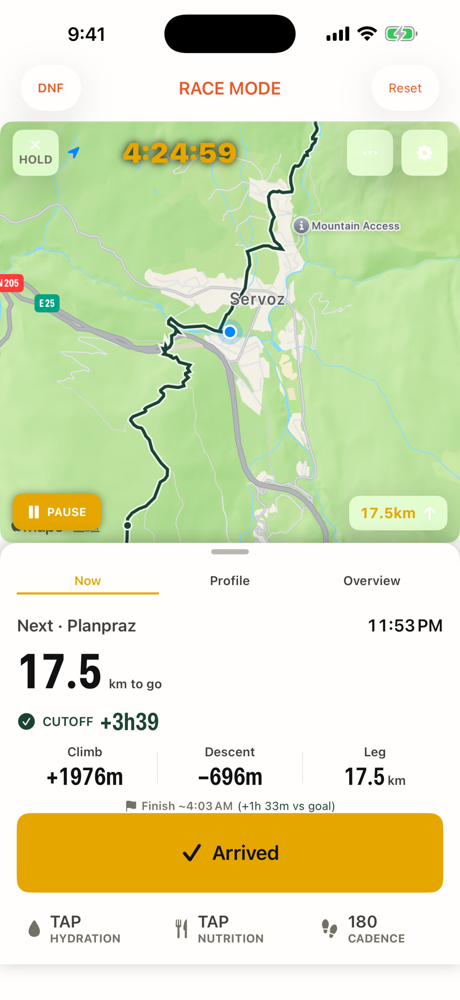
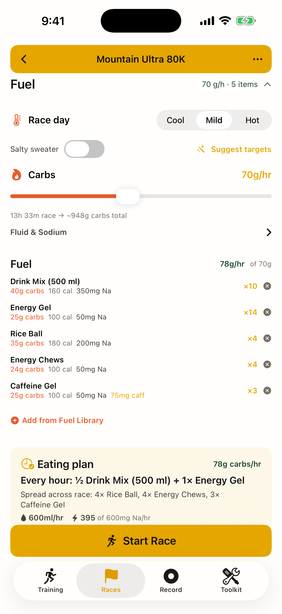

Import the course GPX, set one goal time, and Pocket Crew turns it into a plan you can run — then shows you only what's next on race day. Works with no signal.
GPX in, plan out. Trail-aware pacing adjusts every leg for grade, altitude, fatigue, night and heat. Cutoffs are clock times, with your buffer at each station.
Hourly carb, fluid and sodium targets become a simple eating plan from a library of food you've actually tested in training.
Map-first live screen, one-tap arrive / leave, station timer, GPS auto-arrival, voice guidance, and a Live Activity on the lock screen.
Plan long runs with checkpoints and stash points, or press Record and go. Splits, elevation, heart rate, best efforts, a two-minute debrief.
Planned vs actual, time spent at aid stations, finish vs goal. Export a paced GPX for your watch or a pace card for your crew.
Everything works with no signal. No account, no tracking. Your data stays on your phone, or in your own iCloud if you turn it on. Every feature is free; an optional one-time Buy Me a Gel supports the developer.



Most cutoff DNFs are not fitness problems. They are arithmetic problems at 3 a.m. Here is the method Pocket Crew automates, in case you want to do it on paper first.
Pocket Crew collects no data. There is no account, no analytics SDK and no server of ours. Race plans, training runs, fuel and gear libraries live in files on your iPhone. If you enable iCloud sync, they are copied to your own iCloud Drive and nowhere else. Location is used only while you are tracking a run, and only on the device. If you allow Apple Health, Pocket Crew saves your runs and races there (workout, distance, energy and route) and reads your heart rate during a run; it never sends Health data anywhere. When you draw a course in the Route Builder, the points you place are sent to the public BRouter routing service and to OpenTopoData for elevation, with no name or account attached. The optional Buy Me a Gel purchase is handled entirely by Apple; we never receive your name, Apple Account or payment details.
Questions: gentlepace.app@gmail.com